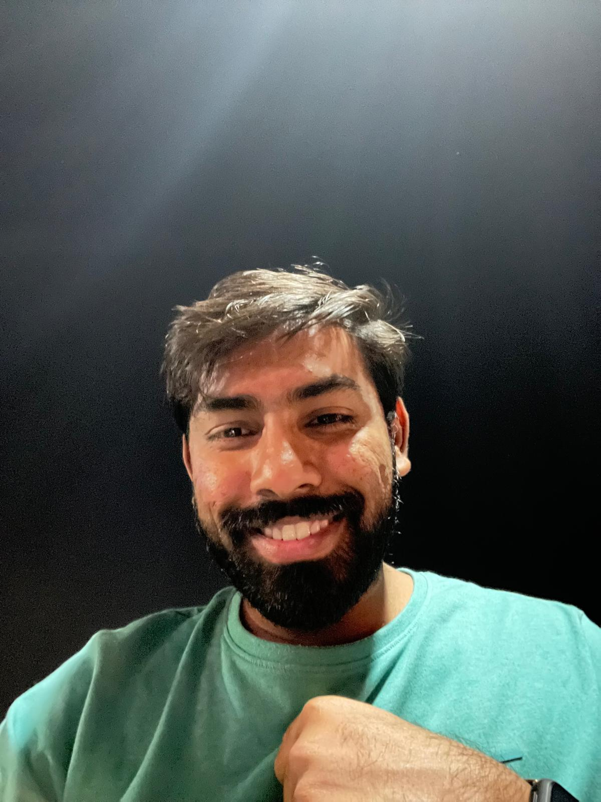

<div class="profile-container">
    
    <div class="profile-content">
        <p>I am a <b>Data Scientist</b> with 5 years of experience in analyzing data and building models to
            help
            companies make better decisions, Currently persuing <b>masters in Computer Science with
                Artificial Intelligence</b>
            at <a href="https://www.universityofgalway.ie/">University of Galway</a>. My work
            focused on using machine learning and deep learning to
            turn complex data into meaningful insights. I have a strong background in mathematics and
            programming, which helps me develop effective models for predicting trends and optimizing
            strategies. Currently, I am working on a Market Mix Modeling project at
            <a href="https://fractal.ai/">Fractal Analytics</a>
            , where
            I use data and statistical techniques to guide marketing investments.
        </p>

        <strong>Key Skills:</strong>
        <ul>
            <li>Machine Learning & Deep Learning, Decision Trees, Random Forest, SVM, Transformers, RNN</li>
            <li>Programming Languages: Python, SQL, TensorFlow, Keras, Pandas</li>
            <li>Data Science Expertise: <a
                    href="https://medium.com/@prateeknigam9/the-bayesian-maze-unlocking-the-power-of-hierarchical-bayesian-regression-part-1-5e6d7fc32634">Bayesian
                    Regression</a> in Market Mix Modelling</li>
        </ul>

        <strong>Experience:</strong>
        <ul>
            <li><strong>Data Scientist - Fractal Analytics (3 years):</strong> Built models for marketing analysis, automated data
                workflows, and performed advanced data analysis to provide insights.</li>
            <li><strong>Software Engineer - Capgemini(2 years):</strong> Improved ETL tools with PySpark, developed microservices, and
                set up secure web applications.</li>
        </ul>

        <p><strong>Education & Certifications:</strong>
            Bachelor's in Electronics & Communication, with multiple certifications in Machine Learning and
            AI.</p>

        <p><strong>Projects:</strong>
            Developed AI models for language translation, created a smart search engine, predicted meme
            trends on Reddit, and analyzed stock market data.</p>


        <p>You can contact me at <a href="mailto:nigamprateek38@gmail.com">nigamprateek38@gmail.com</a></p>


        <p class="compact">University E-mail: <a
                href="mailto:p.nigam1@universityofgalway.ie">p.nigam1@universityofgalway.ie</a></p>
        <p class="compact">LinkedIn: <a href="https://www.linkedin.com/in/prateeknigam9/">@prateeknigam</a></p>
        <p class="compact">Medium: <a href="https://medium.com/@prateeknigam9">Medium Articles</a></p>

    </div>
</div>